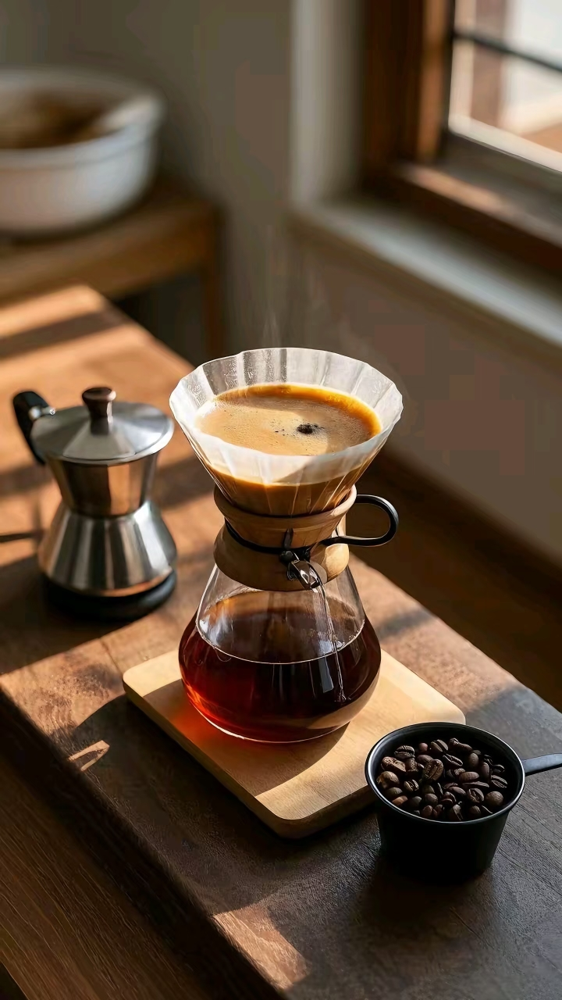

冲煮水温把控 - 温度影响酸甜苦
← 返回首页
水温为什么重要？
水温直接影响咖啡的萃取效率和风味平衡。水温过高会过度萃取，导致咖啡苦涩；水温过低会萃取不足，导致咖啡酸度突出、味道寡淡。不同烘焙度的咖啡豆需要不同的冲煮水温。
不同烘焙度的推荐水温
| 烘焙度 | 推荐水温 | 原因 | 风味特点 |
|---|---|---|---|
| 浅度烘焙 | 90-92℃ | 酸度高，避免高温加剧苦涩 | 花香、果香突出，口感明亮 |
| 中度烘焙 | 92-93℃ | 平衡酸度与甜度 | 焦糖、坚果风味，口感顺滑 |
| 深度烘焙 | 93-95℃ | 苦味明显，需要高温萃取香气 | 巧克力、烟熏风味，口感醇厚 |
水温控制技巧
- 🌡️ 使用温度计：精确控制水温，避免凭感觉判断
- 🔥 烧开水后静置：沸水静置30秒约95℃，1分钟约92℃，2分钟约90℃
- 🚰 预热器具：用热水冲洗滤杯和分享壶，避免水温快速下降
- 💧 分段注水控制：闷蒸用94℃热水，后续注水可适当降低1-2℃
常见问题与调整方法
⚠️ 咖啡太苦 → 降低水温1-2℃，缩短萃取时间
⚠️ 咖啡太酸 → 提高水温1-2℃，延长萃取时间
⚠️ 风味平淡 → 提高水温，检查研磨度是否过粗
⚠️ 杂味明显 → 降低水温，检查咖啡豆新鲜度